3人の卒業・活動辞退が発表されました。
まだ活動期間があるから
今からしみじみと語るのも
なんか違うかな～と思うのですが
今はとにかく寂しい気持ち(´；_；｀)
りしゃこと京ちゃんは
学業が忙しいとのことで
両立するの辛かったろうによく頑張ったね(´；_；｀)
乃木坂を選んで入ってくれて
短い間だったけど一緒に活動できて
楽しい時間を過ごせてよかったよ\❁/
10月の最後の握手会が終わるまで
乃木坂を全うしてほしいな
最後までよろしくね！
寧々は、最後はアンダーライブで締めたいって
言ってくれたことが嬉しかった。
「10thアンダーや研究生に申し訳ない」とか
ブログに書いてあったけど
むしろ寧々がいなきゃだめだよ(>_<)
みんなで最高のライブにしたい！
お別れの言葉はそのあとでもいいよね！
決断するのって難しいことだよね～
3人とも覚悟して自分の道を選んで
本当に偉いなって尊敬しちゃう
寂しくて引き留めたい気持ちと
夢を叶えて欲しいって気持ちと
どっちもあるんだよね。
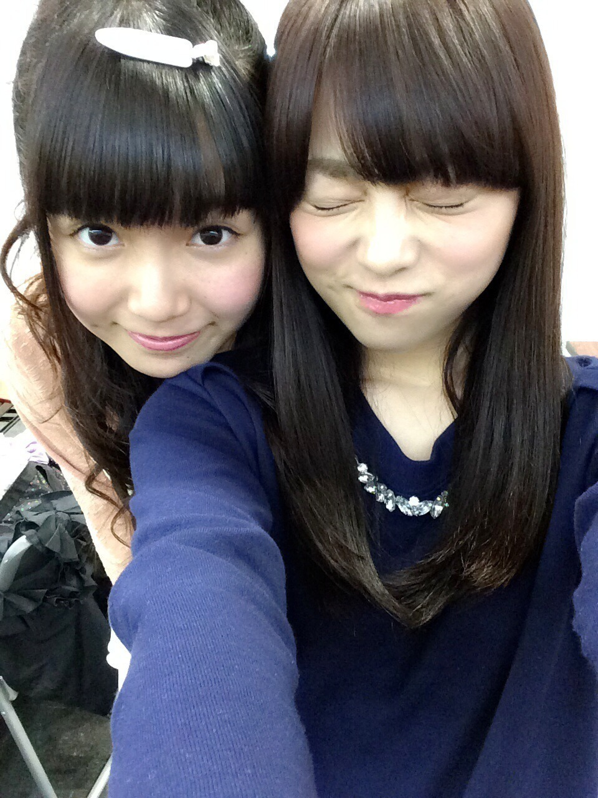
さて、のぎ天更新されました！
アンダーライブ成功を祈願して
お寺で修行してきた( ˙Ο˙ )
みんなもう観てくれたかな？
「日進月歩」って書いて燃やしたよー
漠然とした目標のような気がしなくもないけど
でも今の自分には一番大切なことかなって。
お掃除はもうあれだよね、
「中元チーム」って時点で
なんか楽しそうだもんね。
いや真面目に頑張りました......
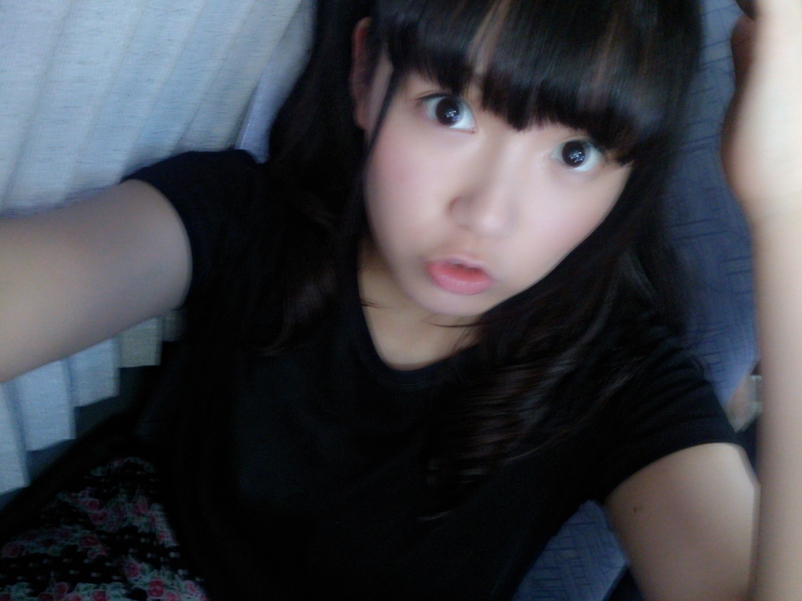
「何度目の青空か？」MV公開されました
今回はアンダーメンバーも
MV参加させていただきました☆
こんな学校あったらいいよね～
独特の世界観を楽しんでもらえると思います
ひめたんはついんてーるしてるよー
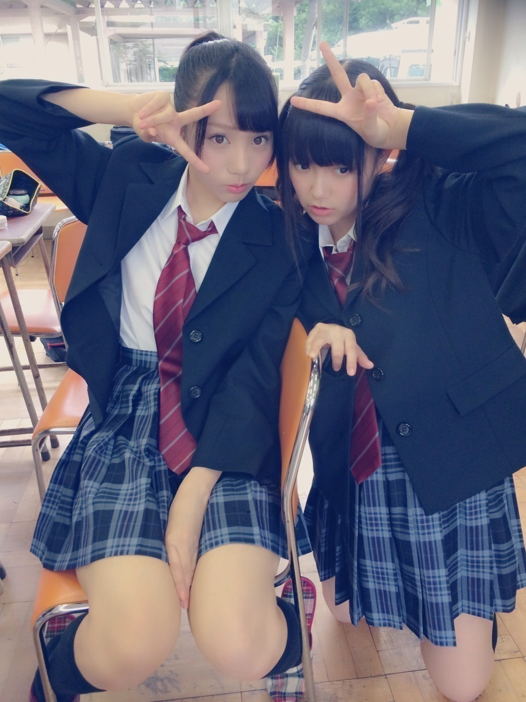
女子高生っぽいポーズ、のつもり
明日の開運音楽堂に出演するって
めーるで言っちゃったけど
来週だった＼(^o^)／
最後に、前回予告した
ひめたんからみんなに質問するコーナー
5月ぶりだよ確か(゜ω゜)
 ひめたんのこと好き？ひめたんとオムライス どっちが好き？○○の秋といえば？
ひめたんのこと好き？ひめたんとオムライス どっちが好き？○○の秋といえば？あの、このコーナー見たことないひとのために
ひとことだけ言わせてね
1問目は毎回お決まりなの(っ´ω`c)♡
この質問の答えいつも楽しみにしてるんだからね～
あ、大喜利とか別に期待してないからね～

 息子(7歳)が「ひめたんは空とべるよ！
息子(7歳)が「ひめたんは空とべるよ！
ビームでるからとぶんだよ！」と言ってました。
ちょっと飛んでもらっていいですか？ななさいの夢は崩せんな( ˙Ο˙ )
7thの個人PVで空飛んでるんだよ！
空中にいるのは5分くらいだけど でも飛んでるよー
びーむとは関連ないかも......んーん何も言ってない。
私、お医者さんをしているのですが
病院でひめたんビームをはやらそうと
入院患者さんやナースの前でひめたんビームを
やっているのですがかなり失笑されます
このまま続けていいのでしょうか？
小さい子にはうけはいいのですが...ひめたんもメンバーから失笑されるから
ある種 間違いではない......けど
やはり心のキレイなひとにしかびーむ効かない説は
有力みたいね:(´◦ω◦｀):
ひめたーん！
さゆりんの二の腕食べるのにはどーすればいいのー？なぬ(゜ω゜)
だめだよさゆりんごのにのうでも
ひめたんが守るよ
ひめたんがバスケのゴールに突っ込んだ
やつが最近流行の壁ドンってやつですか？確かにあれは結構がちな壁ドンだったけど
なんかやだー！！！
てゆか故意でできるもんじゃないし
何より痛いので真似はしないでいただきたい
お、ひめたんにしては珍しく説得力がある解答。
きゅんきゅん王国に
いちご農家さんはいますか？
ぜひやりたい♡あらかわいい。
今いないと思うよ～どうぞ～＊
美味しいのを頼んだぞ( ^O^ )
ひめたんの変顔を見てみたいのですが、
どうそればいいですか？？♡あらかわいい。ん？
上唇の薄いひめたんと
ちゅ～♡したい
ダメかな？かな？？ここに集う乃木坂ファミリーのみんなや
きゅんきゅん王国のみんなに聞いてごらん( ^ω^ )
ひめたんの日記の
コメント欄下２ケタに46を踏んだ方へ
手書きでコメ返するコーナー
＼ ひめたん46 ／
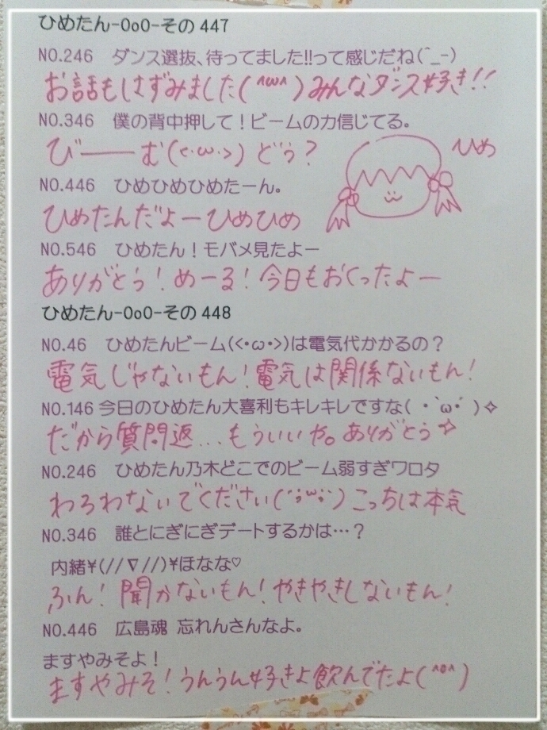
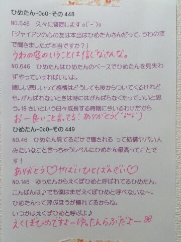
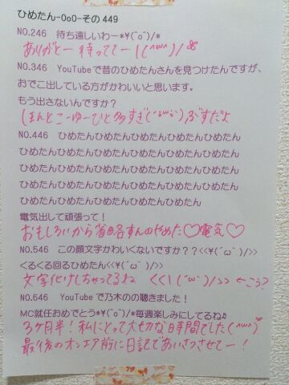
いつもたくさんのコメント
ありがとうございます
いつもはひめたんが質問に答えるけど
今日は逆の立場だからね！
質問返すの意外と大変なんだからね～楽しいよ～
ちなみにオムライスのチョイスに
深い意味はないです(〃ω〃)
明日は今度こそ京都個握！
握手会久々だよね～楽しみにしてたのよ～
1部に参加してくれるみんなは
お寝坊しちゃだめだからねー♪
お留守番ちーむのみんなは
次の日記でレポするから待っててね
あ！乃木のの聴いてねーきっと楽しい回だよー
(＊´・ω・＊)
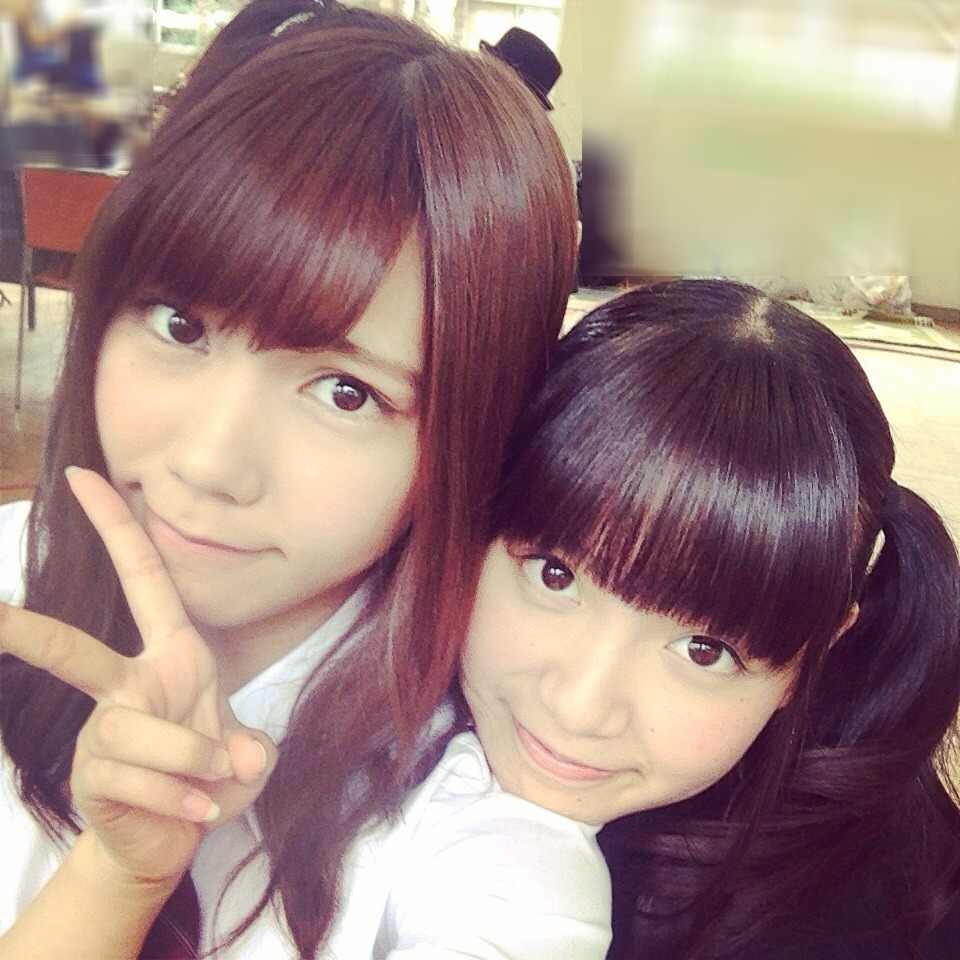
今日は質問返しのコーナーに
みさせんぱい登場するよ☆
さて告知です！
次回の月刊エンタメさんの
ペアグラビアに
まあやとひめたんが登場します∩(・ω・)∩
わー楽しそう＼(^o^)／＼(^o^)／
発売はまた近くなったら報告するね
お楽しみに～＊
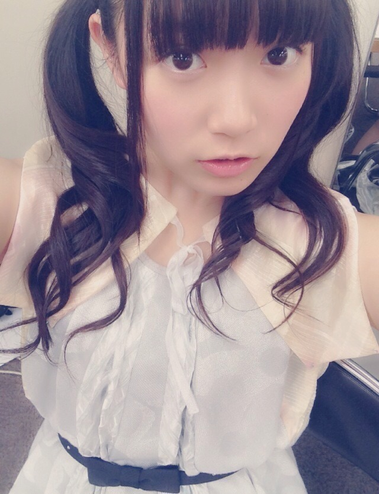
私は上唇が薄いらしい
愛未ちゃんがひめたんにルージュ塗ってくれるんだけど
ちょっと難しいんだってー
そして乃木のの聴いていただけましたか？
#74 伊藤万理華ちゃん・井上小百合ちゃん
あの、何がやりたかったかというと
「ラジオで声しか聞こえないのをいいことに
ありもしない事実を捏造して弄り倒す」的な。
だからハプニング起きまくりでしたねー
伝わりづらくてごめんねー
でもね、伝わらないだろうなって自覚はあるのってか
むしろみんなを「え？」って思わせたかったの(笑)
だって誰も否定しないんだもーん(笑)
でも楽しかったし、仲の良いふたりだから
成せた技だったと思います←フォロー
ちなみに文化放送はお休みの回でした。
#75 秋元真夏ちゃん・衛藤美彩ちゃん
こちらはネット局のみなさんがまだオンエア前なので
あまり詳しいことは言えませんがふたつだけ。
「何度目の青空か？」は「なんぞら」と
略そうって3人の中で決めたよ＼(^o^)／
意見ある人は真夏さんに言ってねー(笑)
真夏さんか美彩せんぱいのブログに
ふたりの仲良さそうな写メが
アップされるはず、そーゆー約束をしましたよー♪
てゆか真夏さんのブログみたけど
ちゅーしちゃうぞはひめたんのーっ(｀・ω・´)笑
次回 #76は永島聖羅ちゃん・畠中清羅ちゃん！
いやー楽しかったー
めっちゃ笑ってるよー聴くの怖いよー
お楽しみに☆
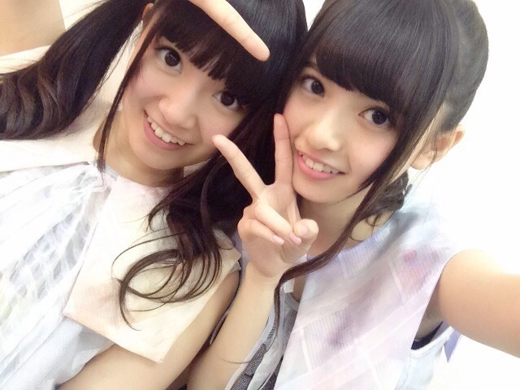
びじねす～
あすかりん今日ちょっといいことあったらしいよ
ひめたんもいいことあったよ
私たちの間で明るい話題になるのは貴重だよー

 ところで、ひめたんの
ところで、ひめたんの
二の腕は、なに味ですか？この質問多かった！
ひめたんの味？？
それは...
教えるのは 君たちにはまだ早い(*・〜・*)
なんせ私もこの二の腕に辿り着くまでに3年かかったのだ。
もう少しこの味を独り占めさせてくれ。
以上みさ先輩より。みさ先輩のにのうで食べたいぼくは
どうすればいいのでしょうか？？ みさせんぱいの味は
みさみさーくるさんじゃないと確かめられないと
みさせんぱいから伝言を預かりました
せんぱいの にのうでは みんなのものだ！
ひめたんが全力で阻止する( ºωº )
ひめたん、初めてきゅんきゅん王国を訪ねます、
これから訪ねる際には、
何を持ってくればよいでしょうか？いちばんは素直な心、かな
ひめたんびーむされて「わ～ \( ˆoˆ )/ 」ってなるくらい
心のやさしいひと大歓迎ですよー
ちなみに最近メンバーの中で
まいちゅんにもびーむ効くみたい♡
カラオケで乃木坂ちゃんの歌の途中に
ひめたんびーむやったら盛大に滑ったんじゃけど、
この責任はどがいにして払うてくれるん？
ちなみにそのお陰で
ただでさえ長いコウモリよの間奏が
凍りついたんじゃがん(笑)スベったことは知らないけど
コウモリよを歌うとは......！
いやーレベル高いね(｀・ω・´)ﾅｲｽﾁｮｲｽ
ひめたんビーム学校でやってたら流行りました！ ほら！これだよこれ！
ひめはこーゆー報告を待ってるんだよ
みんなよろしくね\❁/
男なんだけどどうやったら
乃木坂のメンバーになれるの？
やっぱりまいやんみたいな美貌がないと
だめなのかな？
それともひめたんのようなびーむ力？その枠はもう空いてないから
もっとほかのところを狙ったらいいんじゃない？
あとは募集要項というものがあってですね
宿題が終わんないよ～
ひめたんを1日召使いとして扱ってもいいですか？嫌だし、ひめたんを1日雇ったところで
終わらないと思うよ(´・ω・｀)
先生に泣き落としするならついてくよ
最後にひめたんのパパ、ママ、
お誕生日おめでとうございます!!
ささやかですが
俺をプレゼントしたいと思います(笑)これちょっと好きだわ～
ぱぱまま喜ぶ喜ばないは置いといて
ちょっと好きだわ～
ひめたん、肌スベスベだけど、牛一気飲みとかする？うん、ちょっと一回落ち着こうか。
ひめたんの日記の
コメント欄下２ケタに46を踏んだ方へ
手書きでコメ返するコーナー
＼ ひめたん46 ／
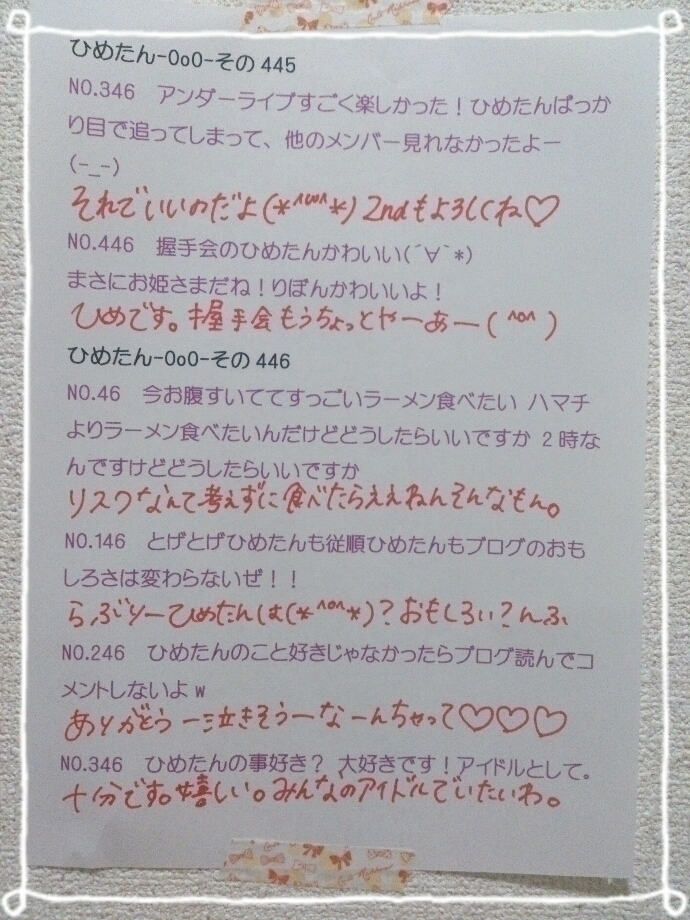
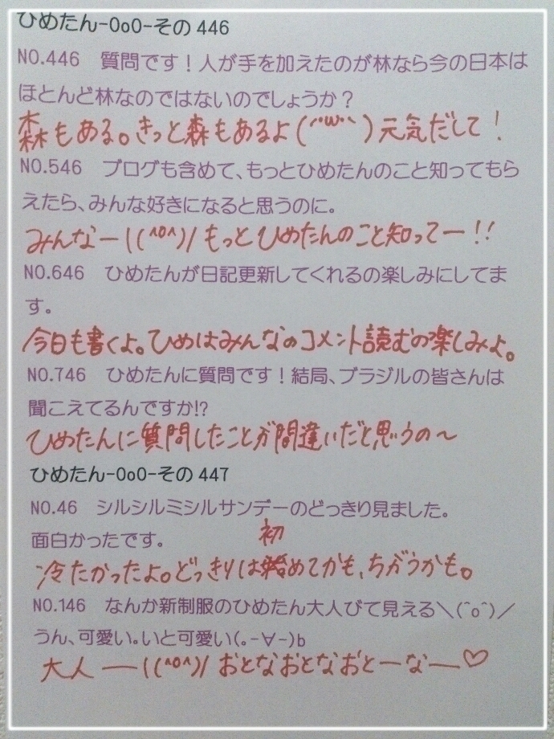
いつもたくさんのコメント
ありがとうございます
今週末は久々に握手会があるねー
久々すぎて今から楽しみだよー！
行くよーって方はもうちょっと待っててね～
なんかねー質問返してたら
久々にみんなに質問したくなってきた(っ´ω`c)
てことで次回ひめたんからの質問コーナーするね♪
(＊´・ω・＊)
みさせんぱいに
にのうで食べられる事件発生＼(^o^)／
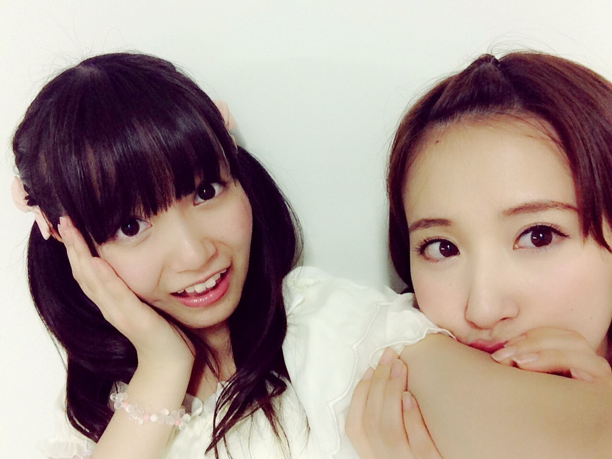
ひめたん満更でもなさそう＼(^o^)／＼(^o^)／＼(^o^)／
みさせんぱい愛しちょんよ～
お味はいかがかしら～
またおうち遊びに行きたいな♡
のぎ天更新されたよ＼(^o^)／
ひめたんの寝起きの良さねー
いやほんとにひめたんは常々言ってるけど
すーぱー寝起き良いからね！
6:00に起きたくて目覚ましセットしたら
5:50に目覚ましよりも先に目が覚めるとか
ざらにある子なんですよ～
かなりんぺろぺろー♡
パジャマトークもしてたけど
何あたしたちのちーむの会話不毛すぎる(笑)
あれファンのみなさんの求めてる
会話じゃないよね絶対に( ºωº )
まあでもみんな ほののーん てしてるし
お年頃のおにゃのこの会話なんて
所詮そんなもんだよ......んー
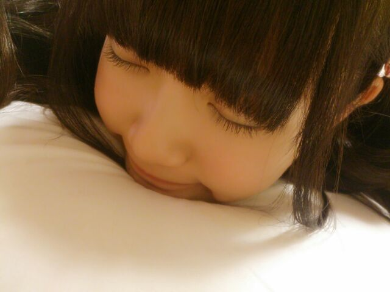
玉子焼き甘い派のひとー( ´ ▽ ` )ﾉ？
次回はお寺へしょうぎょう(笑)
お楽しみに～＊
アニカンRヤンヤン!!Summer特別号の発売日が
延期して9月4日になったということで
やっとこさ発売されました(゜ω゜)
寧々、中田、能條、中元で
アンダーライブについて
語ってきましたよー
ぜひチェックしてみてください☆
最後に∩(・ω・)∩
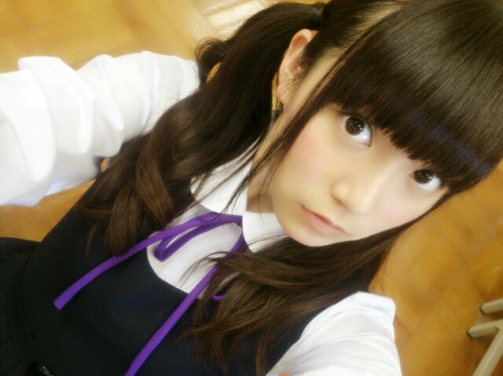
10thシングルのジャケ写の制服！
公式のとはまた違うのよー
今日はいつもより
若干多めの質問返し～ぱやぱや～

 ひめたんは微積分得意ですか？
ひめたんは微積分得意ですか？( ºωº )硬直
ひめたん！今度初めて全握いこうと思うんだが
なに話せばいいか分からんよ〜
ひめたんなに話せばいいんだ〜〜〜？ありがとうー嬉しいー∩(・ω・)∩
何でもいーんだよー
はじめて覚えたドイツ語でもいいし
いちばんすきなぷりん屋さんでもいいし
何でもいいの～待ってるよー☆
乃木のの久しぶりだなぁ
ひめたんは1人ラジオとかやってみたい？やってみたい！
ひめたんラジオ好きなんですよー(^o^)♡
あのね声を使ったお仕事にもともと興味があったり
お話するのとか原稿読むのとか好きなのと
あとはビジュアルに自信がない分
声だけって惹かれる←おい
ひめたんはテストの前日は夜更かしして勉強派？
それとも早起きして勉強派？朝派だな～
一通り眠気覚まししてみても眠いーってなったら
もう何しても頭に入んないよ
え？そうです出来ない人間の言い訳です
それにひめたんは朝に強い体質らしい。
今度体育でバスケやろうと思うんだけど
壁に激突しない方法教えてひめたん！いやいや普通にやってたら
ぶつかんないよまして壁なんて......
(・ω・)ん？
ひめたんはひとカラ行ったら
乃木坂の曲歌いますか？？いつもはあえて歌わないんだけど
この前行ったときは1.5時間くらい
乃木坂メドレーしたよ
どれもおにゃのこには歌いやすいキーだと思う\❁/
そーいえばひめたん料理の腕前はどーなんですかー？上手い下手以前に
あんまり料理しないんだよね
最近は玉子焼き作ってままに褒められたよ～
とても高校3年生の発言には思(´；_；｀)ﾌﾞﾜｯ
先日妹にかわいい女の子の赤ちゃんが産まれまして
かわいくて仕方ありません
しばらくは赤ちゃん赤ちゃんひめたん赤ちゃん
みたいな感じだけど
きゅんきゅん王国から追い出さないでねぎゃーーーそれは一大事！！！
そりゃ赤ちゃんは可愛いよ
ひめたんと赤ちゃんを天秤にかけられたら
たまったもんじゃないよーー
ってことでひめたんにも
赤ちゃんよしよしさせてください
室内の寒いエアコンの風と、
ひめたんびーむしたらひなちまに真顔で
平手打ちされるの、どっちが嫌ですか？ひなちまにビンタなんてされたら
どーせみんなは嬉しくて
にやにやしちゃうんでしょ( ºωº )ひめ知ってるもん
いーもんみんなのかわりに私が受けるから......って
そんな趣味もないんですが。
ひめたんって
髪型でツインの他に
最近気になってる髪型とかあるー？乃木どこのルス告の時にやってた
片方にお花つくるやつ！
ねぇ～
ひめたんのことが好きすぎるよ!!
どぉ～したらいぃの？あらーどうしよう♡
ひめたんもすきー(っ´ω`c)らぶ♡♡
ひめたんの日記の
コメント欄下２ケタに46を踏んだ方へ
手書きでコメ返するコーナー
＼ ひめたん46 ／
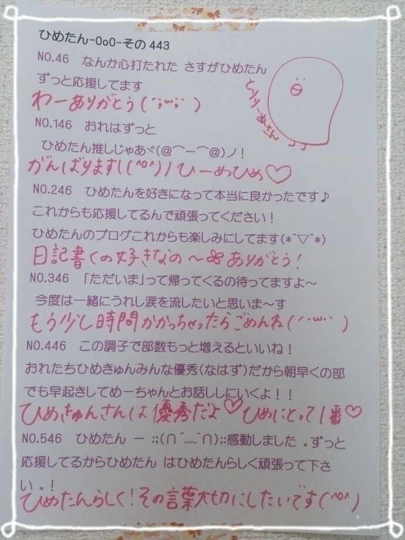
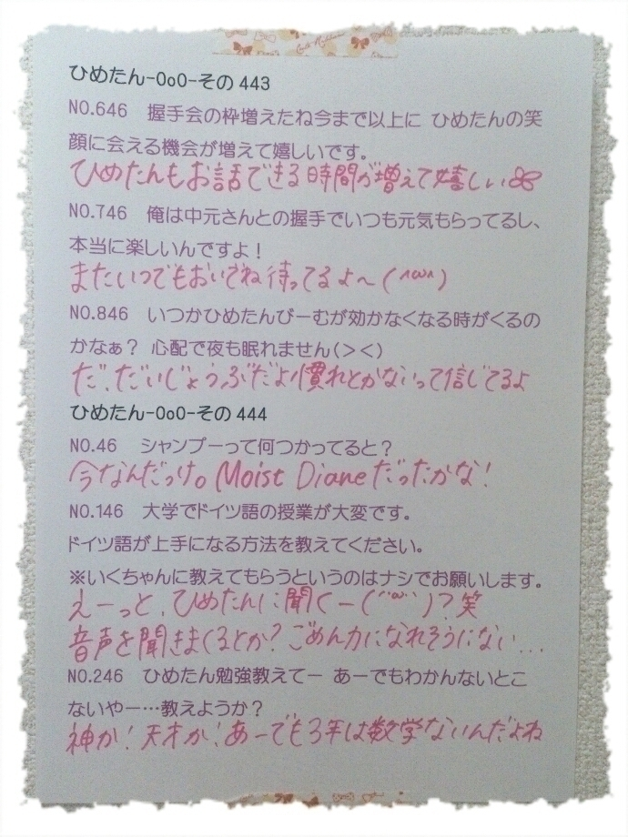
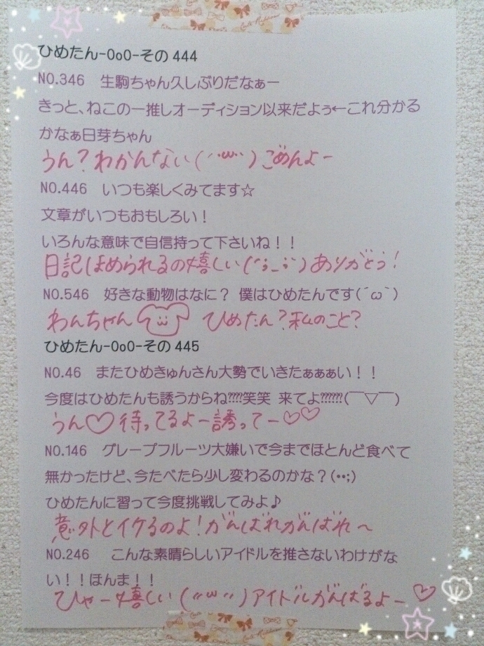
いつもたくさんのコメント
ありがとうございます
アンダーライブ申し込んだよってひと
たーくさんいらっしゃって嬉しい！
みんな当選しますように( ˇωˇ )
あ、そうそうめーるのお返事で
ぱぱ・ままお誕生日おめでとうってコメント
たくさんありがとうねー伝えておくね～＊
そして明日は朝から
撮影頑張ってくるから応援しててね∩(・ω・)∩
みんなは日曜日だからおやすみかなー？
(＊´・ω・＊)
＼ あー♡ ／
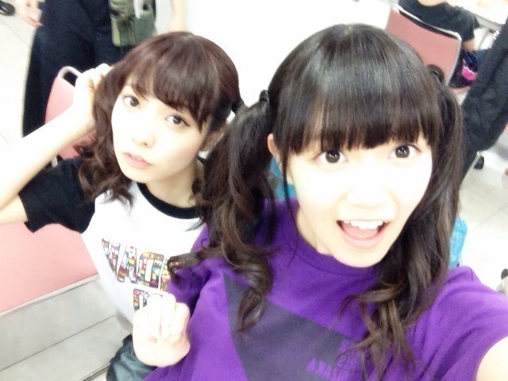
どんくさいコンビのゆったん
ゆったんの脚よくなりますように。
のぎ天観たよ！
お化け屋敷やってたのね
ひめたんゆーほどビビってなかったね(笑)
泣きそうになってた寧々ちゃん
かわいかったよー
ひめたんびーむは華麗にスルーされてたよー
キャンプは前後編なんだと思ってたら
3週だったんだねー
来週こそ寝顔編ですよーひめたんローリングしてたよー
来週もお楽しみに☆
乃木のの！
#74は
伊藤万理華ちゃん
井上小百合ちゃん
ラジオ福島・山梨放送で9/6
青森放送で9/7
#75は
秋元真夏ちゃん
衛藤美彩ちゃん
文化放送で9/7
ラジオ福島・山梨放送で9/13
青森放送で9/14
です☆
文化放送ではちょっとお久しぶりですね～
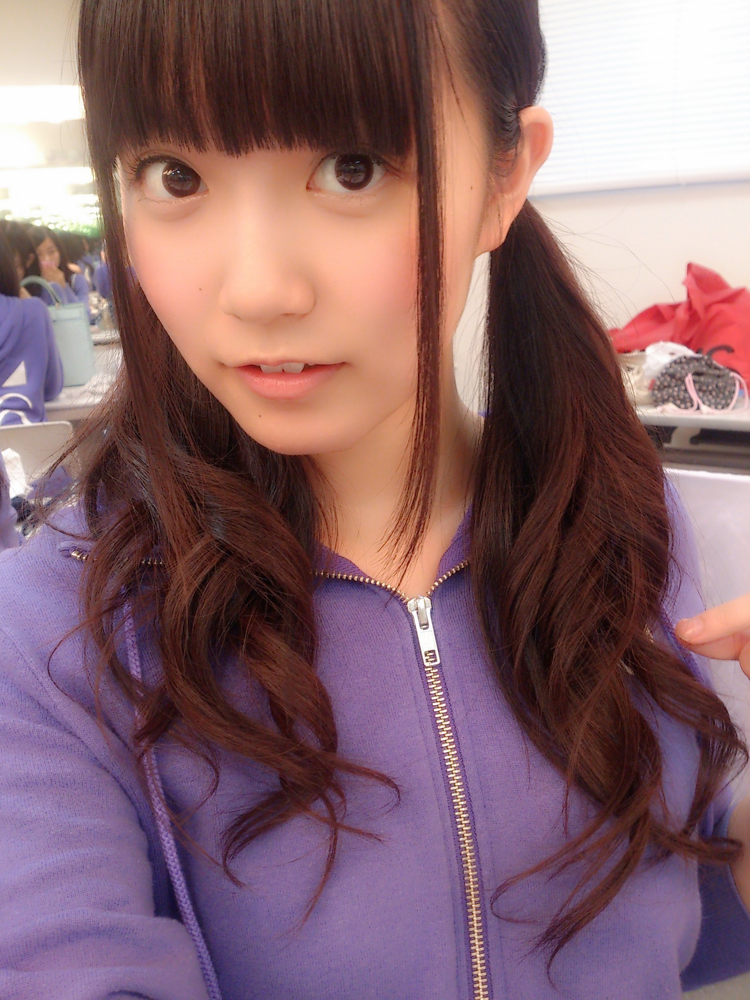
10th個別握手会 追加開催決定！
1/31(土)東京ビッグサイトです
ひめたんは1～4部に参加しますよー
詳しくは公式サイトをチェックしてみてね
お待ちしてます(^O^)～＊
もいっこだけ告知させてねー
アンダーライブセカンドシーズン
モバイル会員先行受付スタートしました！
10/5~19(休演日有り)全18公演です
詳しくは公式サイトをみてね☆
前回は10公演させていただいたのですが
今回はなんと18公演も(´；_；｀)
本当にありがたいことです
中身については今からみんなで練るんだけど
アンダーライブでしかできないことを
できたらいいなーとか思ったり
でもアンダーライブの一番の特徴である
パフォーマンス重視のライブ！ってのは
根底にしっかり持ってやりたいなー
前回のアンダーライブの構成とか空気感が
私はほんとに好きだっただけに
今回はそれを上回ることができるのか
今からとっても楽しみです♪
アンダー曲をフルでできたりとか
楽曲も、パフォーマンス面でも
乃木坂のライブとは一線を画してやっていきたいな
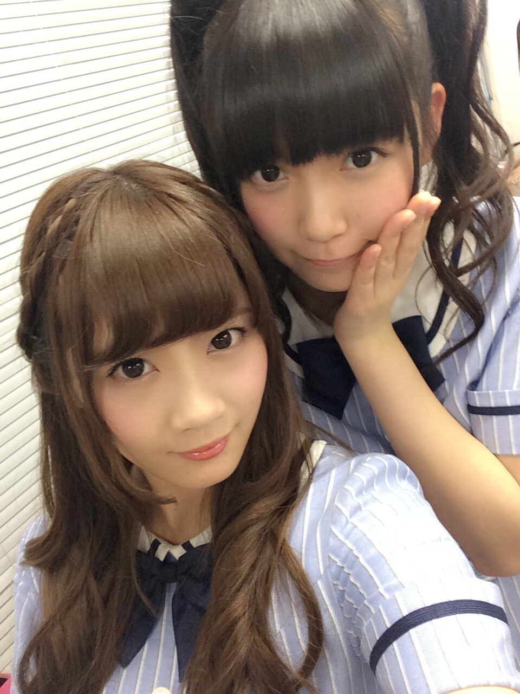
こーんな髪型する日もあるよー
だめだ情報解禁前だから
最近の写メが全然出せない(´・ω・｀)
そいえばちーちゃんのブログで
ひめたんいっぱい出てきて嬉しいよー♡
まあやのブログの？ひめたんの？写メが？
わっひゃーだよねーんふふ
大事件だよー♡
あすかりんのブログでは
茶番やってるよ(゜゜)

 ひめたん、神宮お疲れー
ひめたん、神宮お疲れー
カツカレー
ごめん、全然面白くなかったねうん♡♡♡
やっぱりきゅんきゅん王国のひめは
お昼にプリンー食べるみたいなかわいいことしてるの？あ、あ、あったりまえじゃん:(´◦ω◦｀):
ひめたんがお昼にぷりん食べないで
何食べるって言うのさ:(´◦ω◦｀):
だってひめたんだよ？(裏声)
ひめたんはマグロ好き？まーま好きだよー
ごめんね話が広がらないねー
乃木坂だと泊まりの仕事も時々あると思うけど、
ひめたんは泊まるんだったらどれが好き？•和室(旅館)
•洋室(ホテル)
•テント
•道端ホテルのベッドがほんとに好きなの！
何でだろう、ふわふわしてるよね
ちなみに広い和室で一人部屋だったこともあるよ
テント、は泊まったことないなー
道端、もないかな ╮(´-ω-｀)╭ ﾌｯ
学生のときにカナダ留学してたんだけど、
そのときホストマザーに何故か
「ジーコ」って呼ばれてたの。なんでかなー？ひめたん、ジーコよりも可愛い名前つけて〜ジーコちゃんかわいいけどなー
まーまれーど ちゃん＊゜
俺は今時点では真夏推しなんだけど神宮ライブで初めてひめたんを間近で見たらめちゃくちゃ可愛かったのでひめたん推しに変更しようかと迷ってます。今からでもズッキュン帝国からキュンキュン王国に移ることは可能ですか？
是非教えてください！
（真夏には絶対に内緒で）真夏には絶対に内緒で！わっかりました！
ちょっとだけ待っててくれるかな？♡
＼ まなつさーん ／
ひめたんの日記の
コメント欄下２ケタに46を踏んだ方へ
手書きでコメ返するコーナー
＼ ひめたん46 ／
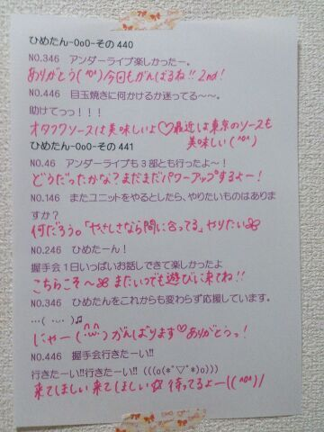
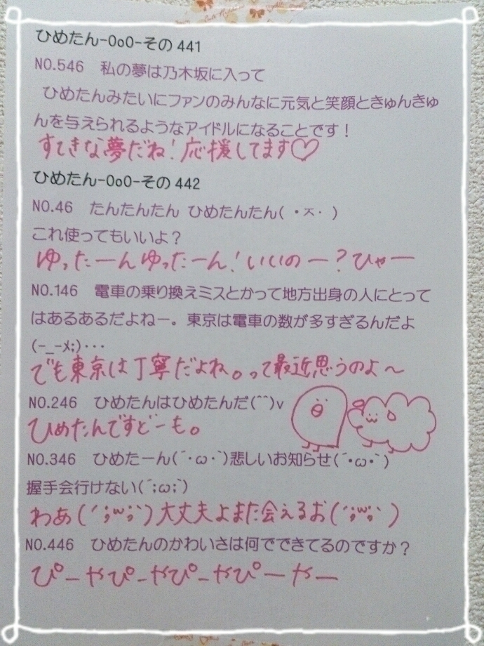
いつもたくさんのコメント
ありがとうございます
未知 じゃなくて 無知 なんだよね
最近こーゆーの多いなー
恥ずかしいなほんとに(´・ω・｀)しゅーん
ツアーの感想も、それからお昼ごはんも
教えてくれてありがとー♪
羊さんは「めりりーぬさん」にしました！
お馴染み「とりりーぬさん」とセットみたいで
いいかなって思って。
考えてくれたみんな
どうもありがとーう(＊^ω^＊)
(＊´・ω・＊)